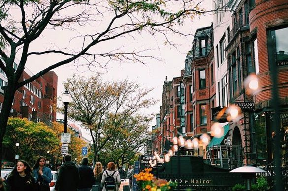
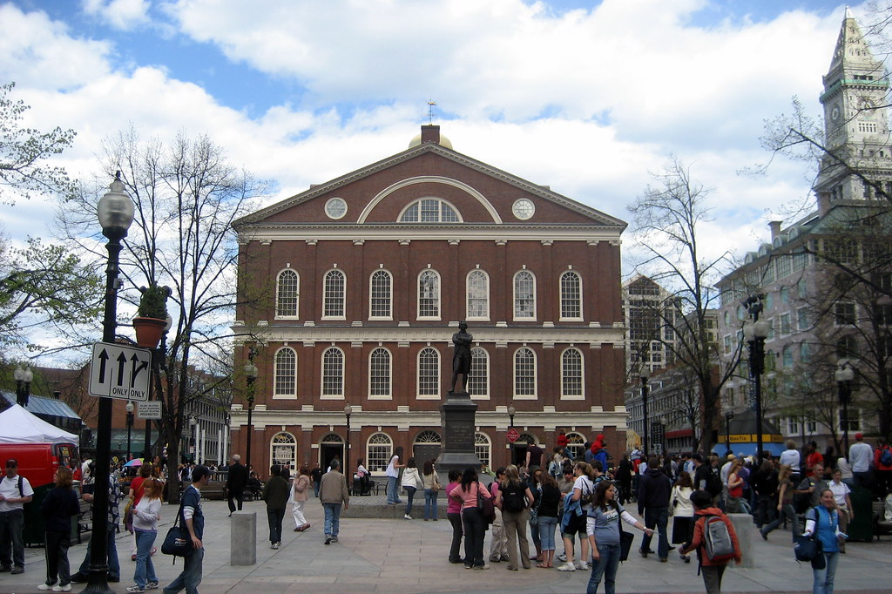
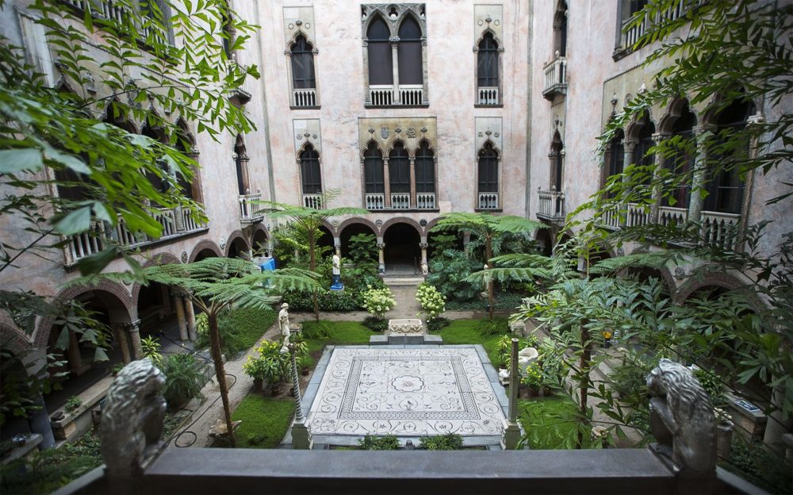

Come see why they call Boston "TitleTown" and hit TD Garden for a game. The Boston Bruins are a professional ice hockey team based in Boston. The team has been in existence since 1924, and is the league's oldest team in the United States.

From designer to thrifting, Newbury has it all. This one street is the one stop shop for all things retail in Boston. Newbury Street is located in the Back Bay area of Boston, Massachusetts. It runs from the Boston Public Garden to Brookline Avenue.

The Freedom Trail is a 2.5-mile-long path through downtown Boston, Massachusetts, that passes by 16 locations significant to the history of the United States. Marked largely with brick, it winds between Boston Common to the Bunker Hill Monument in Charlestown.

The Isabella Stewart Gardner Museum is an art museum in Boston, Massachusetts, which houses significant examples of European, Asian, and American art. Its collection includes paintings, sculpture, tapestries, and decorative arts. Visit and learn about the people, the gardens, and the nototious heist.